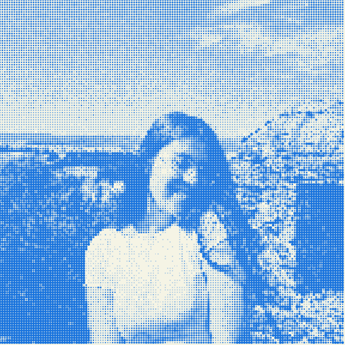

Start at the edges
I design for the people a project is most likely to exclude. Designing for different abilities, contexts, and levels of familiarity tends to make things better for everyone, not just for those at the margins.
I'm a junior designer and illustrator with a multidisciplinary background in arts, design, and multimedia, with a particular focus in service design and children's illustration. I find inspiration in projects that tell stories and bring people together, and I believe design is a powerful tool for accessible and meaningful communication, capable of creating solutions driven by purpose, creativity, and inclusion.
I consider myself a curious, responsible person with a great desire to learn, capable of working in a team and dealing with different challenges.

I design for the people a project is most likely to exclude. Designing for different abilities, contexts, and levels of familiarity tends to make things better for everyone, not just for those at the margins.
I try to understand a problem before I try to solve it. The brief is rarely the whole picture. Research and conversation come before visuals.
Rough sketches and quick prototypes, tested with real people, tell me more than a polished idea I've only discussed in my head. I'd rather find the flaw on paper than after launch.
Not a final layer. When accessibility is a condition from the beginning, it stops being a constraint and becomes part of the concept itself.
The stated problem and the real problem are often different. Part of the job is finding out which one I'm looking at.
I start by understanding the problem, not solving it. Research, interviews, competitor analysis, and, when relevant, an early look at accessibility needs, so the direction I choose is based on what's actually there, not on assumptions.
I turn what I've learned into focus. Personas, user journeys, and a clear problem statement help me decide what the project is actually for.
I explore before I commit. Sketches, quick brainstorms, moodboards. The goal at this stage isn't the right answer, it's enough options to recognise it when it shows up.
I give the idea a form people can react to. Wireframes, low or high-fidelity prototypes and early visuals. Something concrete enough to test, not just describe.
I put early versions in front of real people before I trust my own judgment of them. Usability tests, quick feedback sessions, or simply watching someone use a prototype without guidance. This is where I find out what actually works, rather than what I assumed would.
Testing only matters if it changes something. I use what I observe to revisit decisions until the solution holds up outside my own head.
I hand over the finished work, but I don't consider the project closed until I've looked back at it. What held up, what I'd do differently, that reflection is part of the process, not an afterthought.
| Area | Description | Year |
|---|---|---|
| Freelance Graphic Designer | Developed visual identities and creative concepts for projects in sports, animal welfare and music, creating visual assets adapted to different brands and communication needs. Designed a range of graphic materials, including merchandise, price lists, printed materials and digital content for social media. Created graphic elements for bicycle seatposts, adapting visual concepts to specific products and their intended applications. Applied branding and visual communication principles to maintain consistency across different media and formats. | 2025-Present |
| Illustrator & UX/UI Designer (part of my master thesis) |
Designed a digital application featuring illustrations that explain the winemaking process, helping clients better understand the information presented. Designed the user interface and developed the illustrative elements, drawing on illustration techniques, design systems and UX/UI principles. Used Figma and Adobe Illustrator to establish a consistent visual language and create an intuitive user experience. | 2023-2025 |
| Course | Institution | Year |
|---|---|---|
| UX/UI Design | IEFP | 2026 |
| Design and Multimedia // Master's Degree |
UC - University of Coimbra | 2022-2025 |
| Art and Design // Bachelor's Degree |
UPC - Polytechnic University of Coimbra | 2019-2022 |
| Certificate | Institution | Year |
|---|---|---|
| In-depth knowledge in the application of Design Thinking. | NAU Platform | 2026 |
| Digital Project Management | NAU Platform | 2026 |
| Entrepreneurship | IEFP | 2026 |
Download my CV and portfolio!